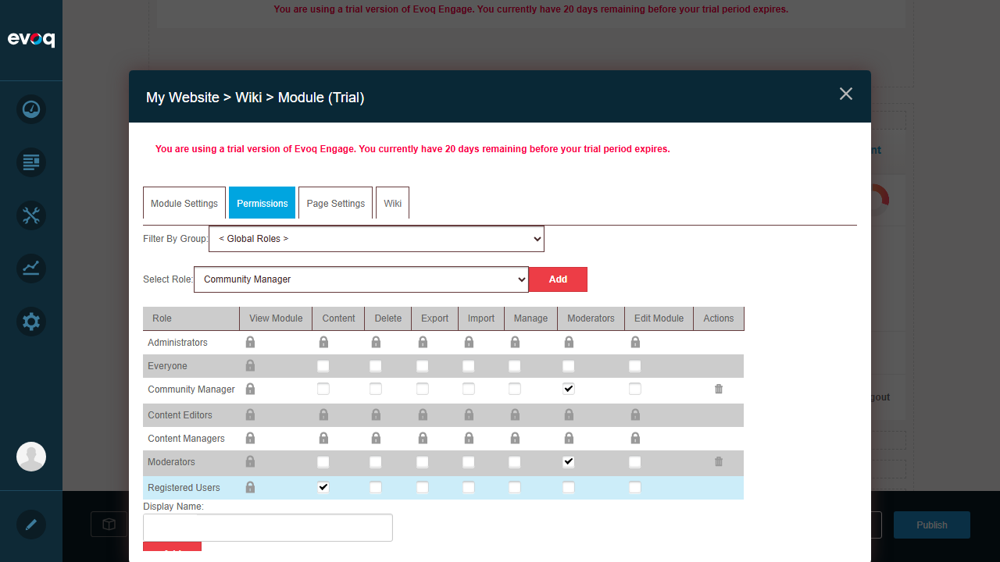
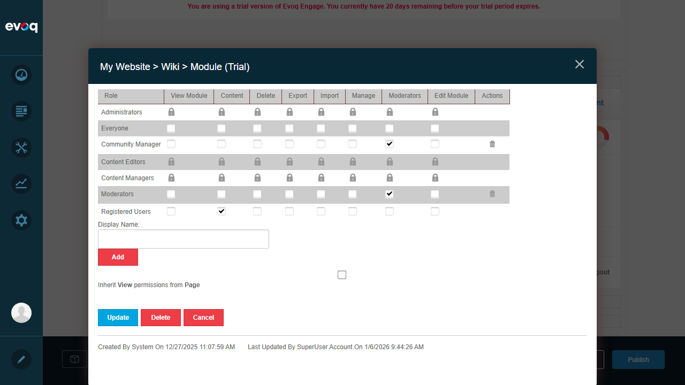

Permissions and Security - Test Report
Feature Information
| Extension | Evoq.Social.Wiki |
|---|
| Feature Name | Permissions and Security |
|---|
| Feature Priority | Top |
|---|
| Description | Control access to wiki features based on user roles and permissions |
|---|
| UI Location | Module Settings > Permissions tab |
|---|
| Test Date | January 6, 2026 |
|---|
Test Cases
Test 1: View Permissions
PASS
Description: Test that the View Module permission column is visible and correctly displays permissions for all roles.
Steps:
- Navigate to Wiki page
- Enter edit mode
- Open module settings for Wiki module (433)
- Click on Permissions tab
- Verify View Module column is present with permission states for all roles
Result: View Module column is present and shows lock icons (inherited) or checkboxes for explicit permissions. The "Inherit View permissions from Page" checkbox is available and functional.

Test 2: Create Permissions (Content Permission)
PASS
Description: Test that Content permission can be toggled for roles to control wiki article creation.
Steps:
- In Permissions tab, locate Registered Users row
- Click on the Content column checkbox/icon
- Verify permission state changes from "Not Specified" to "Permission Granted"
Result: Successfully toggled Content permission for Registered Users. The checkmark appeared indicating permission was granted.

Test 3: Edit Permissions (Edit Module)
PASS
Description: Test that Edit Module permission column exists and can be configured.
Steps:
- In Permissions tab, verify Edit Module column is present
- Observe permission states for different roles
Result: Edit Module column is present. Administrators, Content Editors, and Content Managers have this permission granted (lock icons indicating inherited permissions).

Test 4: Moderate Permissions
PASS
Description: Test the Moderators permission column which controls moderation capabilities.
Steps:
- In Permissions tab, locate Moderators column
- Verify Community Manager and Moderators roles have explicit permissions
- Verify other roles can have this permission toggled
Result: Moderators column is present. Community Manager and Moderators roles have checkmarks indicating explicit "Moderators" permission. The permission can be toggled via the grid interface.
Test 5: Group Mode Permissions
PASS
Description: Test that permissions can be filtered by group.
Steps:
- In Permissions tab, locate "Filter By Group" dropdown
- Verify dropdown has options for "< All Roles >" and "< Global Roles >"
Result: Filter By Group dropdown is present with options including "< All Roles >" and "< Global Roles >". This allows filtering the permission grid by role groups.
Test 6: Anonymous User Access
FAIL
Description: Test configuring permissions for Unauthenticated Users (anonymous visitors).
Steps:
- In Permissions tab, select "Unauthenticated Users" from the Select Role dropdown
- Click "Add" button to add this role to the permissions grid
- Observe the result
BUG FOUND: When attempting to add "Unauthenticated Users" role to the module permissions, the system throws a critical error: "Object reference not set to an instance of an object."
Error URL: http://localhost:8081/Default.aspx?tabid=40&error=Object+reference+not+set+to+an+instance+of+an+object.
Impact: Administrators cannot configure anonymous user access for Wiki modules, preventing proper setup of public-facing wiki pages.

Test 7: Permission Inheritance
PASS
Description: Test the "Inherit View permissions from Page" checkbox functionality.
Steps:
- In Permissions tab, locate the "Inherit View permissions from Page" checkbox
- Verify it is checked by default
- Click to uncheck the checkbox
- Observe changes in the View Module column
Result: The checkbox successfully toggles permission inheritance. When unchecked, View Module permissions that were showing as "Not Specified" (inherited) changed to show explicit permission states.

Test 8: Anti-Forgery Validation
PASS
Description: Verify that API endpoints are protected with anti-forgery tokens.
Steps:
- Review ContentController.cs code
- Verify [ValidateAntiForgeryToken] attributes are present on POST/PUT/DELETE methods
Result: Code review confirms that the ContentController.cs file includes [ValidateAntiForgeryToken] attribute on all write operations (POST, PUT, DELETE methods). This protects against CSRF attacks.
Relevant Code Files:
- DesktopModules/DNNCorp/Wiki/Services/ContentController.cs - Contains API endpoints with ValidateAntiForgeryToken
- DesktopModules/DNNCorp/Wiki/Components/Common/ModuleSecurity.cs - Implements CanCreateArticle() permission check
- DesktopModules/DNNCorp/SocialLibrary/Components/Common/ModuleSecurityBase.cs - Base class with CanView, CanEdit, CanModerate properties
Observations
- Permission Grid UI: The permissions grid provides a comprehensive view of all permission types (View Module, Content, Delete, Export, Import, Manage, Moderators, Edit Module) across multiple roles.
- Lock Icons: Lock icons indicate inherited permissions that cannot be directly modified for certain roles (like Administrators).
- Role Selection: The Select Role dropdown allows adding additional roles beyond the default set, though the "Unauthenticated Users" option causes errors.
- User-based Permissions: A "Display Name" field with Add button allows adding permissions for specific users, though this was not tested.
- Code-level Security: The ModuleSecurity class extends ModuleSecurityBase and implements CanCreateArticle() which combines CanModerate OR _hasCreatePage permissions.
Test Environment
| Website URL | http://localhost:8081 |
|---|
| User Account | SuperUser Account (host) |
|---|
| Browser | Playwright-controlled browser |
|---|
| Code Repository | C:\DNN\Evoq.Extensions.Tester\repos\Dnn.Evoq.Social |
|---|